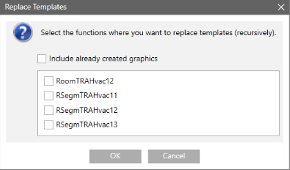
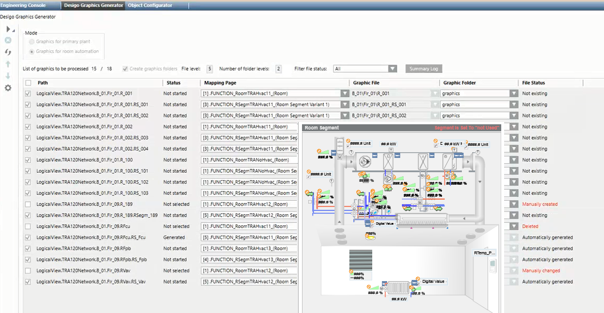

Generating Graphics Pages
Scenario: You want to create your own graphic page for each room or segment instead of using the available room template. Use this procedure to individually adapt the graphic page to meet the requirements of a project.
Reference: Background information is available in the Workspace Room Graphic Generator.
Flowchart:
Prerequisites:
- Data was imported.
- In the user group, under Application rights, Desigo Graphics Generator is selected.
- Mapping graphics for rooms and segments as well as associated functions are created.
- System Manager is in Engineering mode.
Steps:
1 – Prepare Workspace
- In System Browser, select Management View.
- Select Project > System settings > Conversion tools > Desigo Graphics Generator.
- The Desigo Graphics Generator tab displays.
- Select the option Graphic pages for room automation.
- In the System Browser, select Logical View.
- Select Logical > [Network] > [desired level for generation].
- Drag the appropriate object folder to the Desigo Graphics Generator tab.
- The Replace template dialog box displays.

- Select the check box for the template to be replaced.
NOTE: Only room and segments are displayed that fulfill the following conditions:
- A function is assigned to the data point.
- A template is assigned to the function.
- The room mapping graphic is available (MAP_FUNCTION_XXXX_)
- A function with prefix _NT is available for the room mapping graphic. - (Optional) Select check box Include previously created graphics, if your want to overwrite existing graphics.
- Click OK.
- Rooms with segments are displayed in a list in a workspace.
2 – Setting Graphic Structure
This setting must entered at the start of the project. These changes must be taken over on extensions or later changes.
- Select Extended settings
 .
. - Select Create graphics folder to create a new folder.
- Select the File level to be considered for generation.
- Select the Number of folder levels to use for the graphic structure.
- The folder level is updated in the Graphic file column.
NOTICE

The graphics generator can no longer recognize graphic files
Only define the folder levels at the start of your project. Graphic pages can no longer be correctly assigned to the graphics folder if changes to levels are made after the fact.
3 – Select Mapping Pages
- Select Filter file status and select optionNone from the drop-down list.
- Displays only rooms that do not have a graphics page.
- Select a line for editing.
- Moving the mouse in the Mapping page column displays a preview of the mapping graphics. The mapping graphic with the best match is displayed at the top. Highlight the line (CTRL + A = all) to be created using the same mapping graphic.
Select the check box to the left of the Path column if you already created graphic pages.

4 – Starting Generation
- Click Generate graphic
 and then Yes to start the generation process.
and then Yes to start the generation process. - The Overview of generated graphic pages dialog box displays.
- Click OK.
- The generation process is completed for the graphic pages.